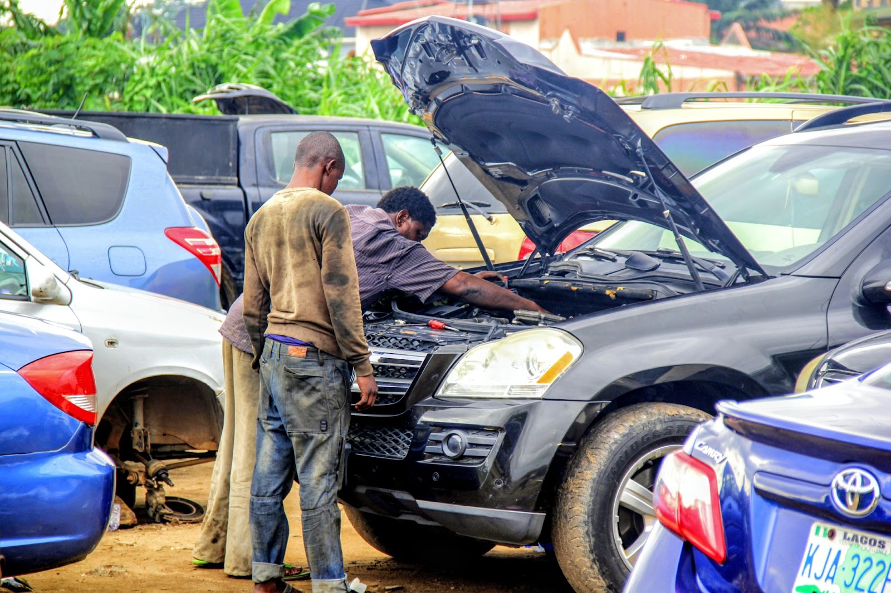

Departure from Vogan
Paul is from the small town of Vogan in the Maritime region of Togo. He was in his final year of high school in 1986 when political riots broke out that caused all the schools in Vogan to close for two years.

A year after the riots began, Paul's school still had not re-opened. He was tired of having nothing to do at home and decided to find a job to save money to travel to Nigeria. His elder brother was working as a mechanic in the city of Lagos and he always wanted to join him there. The riot and closure of his school opened up the opportunity to do so. His brother learned how to fix BMW, Mercedes Benz and Japanese cars in Lagos and Paul dreamed of fixing cars, too.
At the time, a British cigarette company Camel came to Vogan to do a publicity campaign. Paul could speak a little bit of English so he applied to be a marketer and he got the job. He sold cigarettes on Fridays, Saturdays and Sundays at a club and saved up his earnings for three years. He left Vogan in 1990.
Taking a Well-Traveled Path to Cotonou
Paul had experience crossing the borders in the region. Prior to the riots, he and his friends left Vogan many times and traveled all the way to Cotonou to party in the beautiful beaches there. As a result, his travel plans were laid out easily. He took a car from Vogan to Lomé and there, he got into another car to Cotonou. Paul traveled at that time without a passport and even though he knew the paths to take, he experienced harassment every time he traveled.
"I know the borders very well. If you want to cross any border, you must be a strong man. When you get to the borders, they do you anyhow."
However, this was his first time traveling to Nigeria to see his brother. His brother gave him advice on how to get from Cotonou to Lagos and from the border to the Surulere local government area where he lived and worked.
Informal Pathways to Nigeria
Traveling without a passport is a reality for many people in the West African region. As a result, there are often both formal and informal pathways for migration. In the 1980s and 1990s, it was easier for people like Paul to travel without a passport. However, traveling without one has become increasingly difficult over the years. Documentation requirements have become stricter since then and harassment and extortion has been on the rise.
Paul took informal pathways during his initial journey to Nigeria and sticks to this path anytime he travels. There is an informal border at Seme, where people without passports can pass if they pay a fee to bike transporters and touts (who have a behind-the-scenes arrangement with border control to take passengers across). Informality is a very important characteristic of migration in West Africa. Even with the Protocol on Free Movement, a signifcant percentage of migration remains informal in nature. Many people rely on informal pathways because of the high cost of migration and documentation, the increasing number of checkpoints, and to avoid harassment from security operatives. Crossing the informal border comes with its own risks - the road is not developed and safety is not guaranteed, it also comes at a financial cost.
Paul changed his CFA to Naira to pay an okada rider to take him to the other side of the Benin border. It was a long ride but it cut past the checkpoints into Seme. He took another okada from there to Badagry.
Arriving at the New Home
Paul took a danfo (public transport bus) to Mile 2 and then a shared cab to Oshodi. In Oshodi, he gave the cab driver the address of his destination in Surulere. Surulere is one of the most vibrant and densely populated neighbourhoods known for its bustling nightlife and entertainment. It connects the Lagos mainland to the Island.
Paul’s brother was waiting at the bus stop for him. His brother sent a letter to their parents to tell them he arrived safely. (At that time, there were no cell phones so the only way to let his parents in Vogan know of his arrival was to use the post.) In the early 90s, Surulere was not as developed as Vogan but many things have changed since then.
Seven Years as an Unpaid Apprentice in Surulere
In Paul’s youth, if your parents took you to a workshop to be an apprentice, they must sign an agreement with your Oga (boss) but because the Oga was his senior brother, he didn’t sign an agreement. Paul worked with his brother for over seven years because there was no agreement about a date of completion. People who sign an agreement must buy drinks (gifts) and bring money too. His apprenticeship was longer than usual because he also didn’t bring money or gifts. He was not paid throughout his apprenticeship; however, he decided to wash people’s cars four months after his arrival to earn income on the side. He washed cars whenever he had free time. "Because I was stubborn, I insisted on doing my own thing outside my brother’s business. I used to wash cars. I had many customers, people liked me so they used to give me 10 Naira whenever I washed their cars. 10 Naira was big money in the 90s." Paul lived in the mechanic workshop during those years. In 1998, his brother released him from the apprenticeship and he collected a certificate of completion from him.
A New Beginning
Paul left Surulere in 1999 and moved to Isolo because there was a growing population of Togolese people and he was able to split the cost of rent with a friend.
à L'aise in Isolo
 Paul set up his own workshop in Isolo and has been fixing cars since then. He has both Nigerian and Togolese apprentices working for him. He got married to a Togolese lady and all his children were born and have grown up in Nigeria. I tell my children that if they make it here, they achieve there [Vogan]. Life in Francophone countries is entirely different from the one in Anglophone countries. I allow them to see the way people live in Togo so that they can compare it to Nigeria. I have been very comfortable even though I am independent and came here without my parents. I have not had difficulties here because I am not Nigerian. I am à l'aise (at home) here.